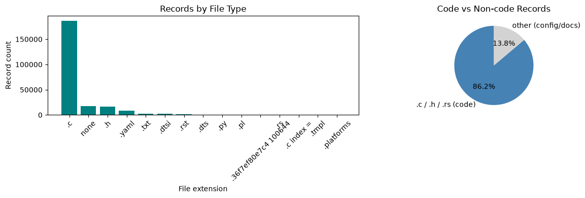
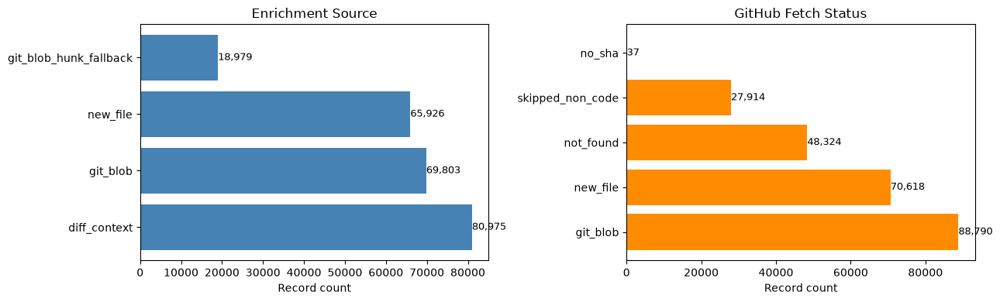
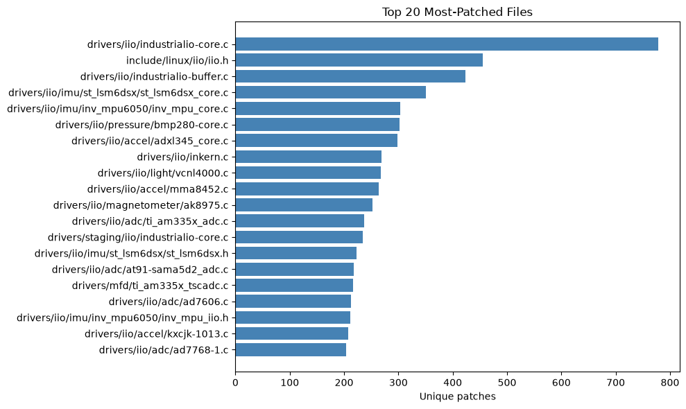
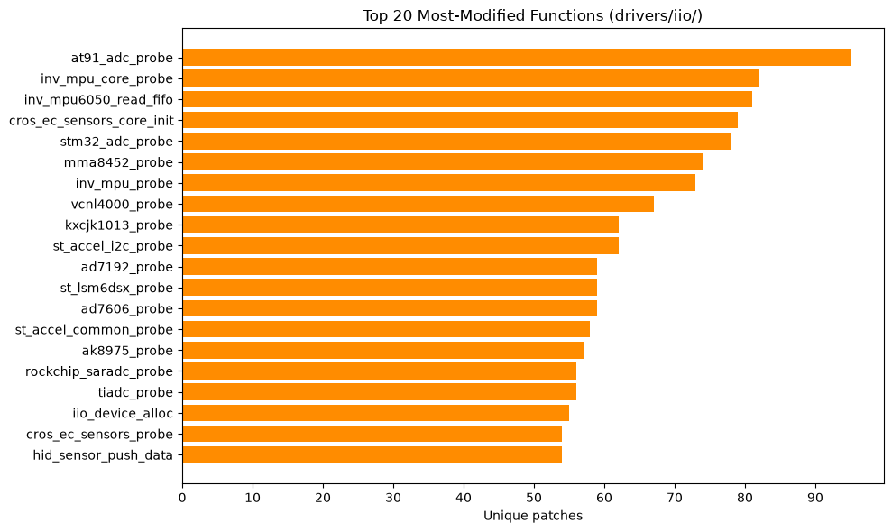
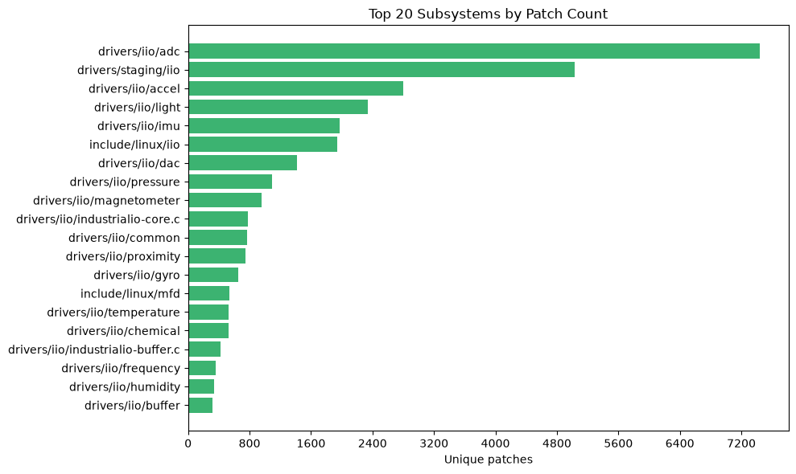
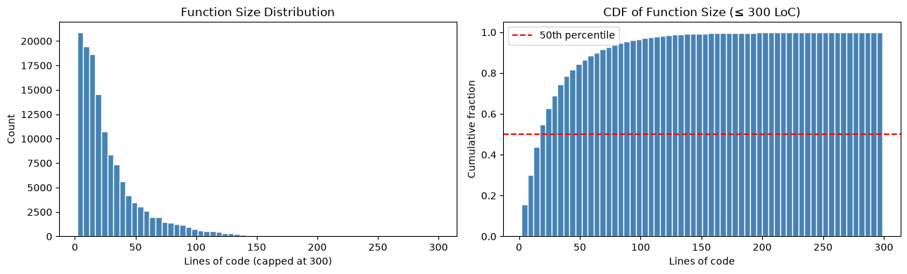
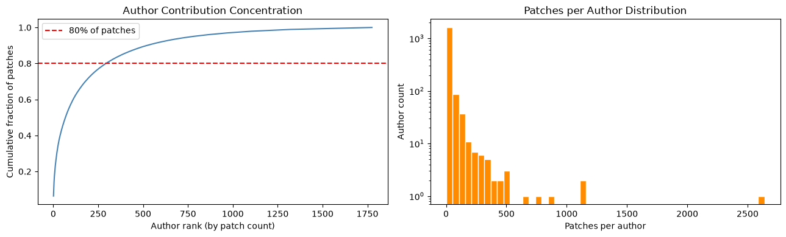
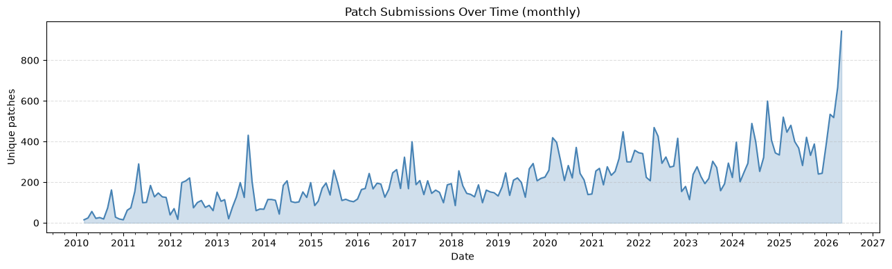
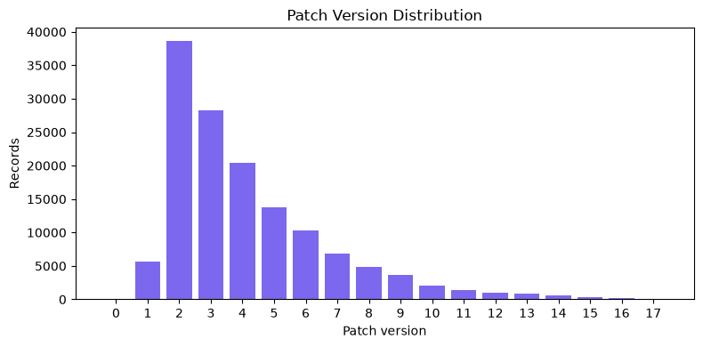

1) Contexto e Motivação
O tema central da minha tese (até o momento) é a diversidade de código e geração de soluções para cunho educativo. Assim, tentar aplicar alguma das métricas que estou pesquisando em cima do dataset disponibilizado das mailing lists do Kernel (LKML5Ws), é um bom avanço nessa direção. Isso será interessante de analisar no contexto Linux, pois os patches submetidos a uma mesma mailing list variam em termos de estrutura, estilo e complexidade.
Para viabilizar essa análise, o ponto de partida é o dataset LKML5Ws (Linux Kernel Mailing Lists - What, When, Who, Where, Why), publicado por pesquisadores do próprio IME-USP. Com quase 30 milhões de e-mails extraídos de 350 mailing lists, o dataset cobre 30 anos de desenvolvimento do kernel Linux.
O recorte escolhido para o estudo de caso é a mailing list do subsistema IIO (Industrial I/O), por ser o subsistema com o qual já trabalhei ao longo do Ciclo Kernel Linux desta disciplina. Esse conhecimento prévio facilita a interpretação dos resultados e a validação manual de patches, etapa importante para aferir a qualidade das métricas de diversidade calculadas.
2) O Dataset LKML5Ws e a Mailing List IIO
O LKML5Ws organiza os dados em formato parquet com uma linha por e-mail. Para cada contribuição, o dataset registra:
- what: a modificação de código (
code), no formato unified diff; - when: a data de envio do patch (
date); - who: remetente e papéis dos contribuidores auxiliares (
from,trailers); - where: a mailing list de destino;
- why: assunto e corpo do e-mail explicando a mudança.
Ao filtrar pela mailing list IIO, o subconjunto extraído apresentou:
- 119.896 e-mails no total;
- 41.861 e-mails que contêm a coluna
code(i.e., são patches com diff); - Os demais são discussões, respostas e mensagens de controle sem código associado.
Cada entrada da coluna code é um array NumPy de strings contendo o diff
completo no formato unified, com cabeçalhos de arquivo, blocos diff --git,
linhas de índice com os hashes dos blobs e hunks numerados.
3) Primeiro Desafio: Hashes Abreviados dos Blobs
A linha index de cada bloco diff contém hashes dos blobs git antes e depois
da modificação, por exemplo:
index d707d43d5526..3a9f1b8c4e21 100644O problema é que esses hashes são abreviados (entre 9 e 12 caracteres na maioria dos casos), enquanto a API de blobs do GitHub exige exatamente 40 caracteres. A distribuição no dataset IIO é:
- 12 caracteres: ~2.318 ocorrências (maior parte);
- 9 caracteres: ~206 ocorrências;
- 40 caracteres: apenas ~66 ocorrências.
Tentativas de uso da API REST do GitHub com o ({sha}) disponível
retornavam HTTP 422 para as hashes abreviados, enquanto a alternativa via endpoint
cgit do kernel.org retornava HTTP 403. Desse modo, tive que abandonar a abordagem via API.
A solução foi usar o git local, como eu já havia o projeto localmente por conta das etapas anteriores da disciplina. Assim, o comando
git cat-file -p <sha_abreviado> resolve os hashes abreviados nativamente,
sem necessidade de expansão para 40 caracteres.
4) Segundo Desafio: Patches Propostos, Não Mesclados
Os e-mails da mailing list representam patches em revisão, não commits já mesclados. Isso traz duas implicações diretas:
- O blob after (versão modificada) pode não existir em nenhum repositório público, pois o patch pode ter sido rejeitado ou ainda estar em discussão;
-
Mesmo o blob before (versão original) pode não estar em
torvalds/linuxse o autor escreveu o patch contra uma árvore de subsistema (comojic23/iio), que tem commits não presentes na árvore principal.
O campo _source_reference presente no dataset contém um hash de 40 caracteres,
mas trata-se de um hash de conteúdo do MBOX (identificador do e-mail), não de um SHA git.
Não há como usá-lo para localizar o commit original de forma direta.
Decisão: abandonar completamente a busca por hash de commit. O foco
passou a ser o blob before da linha index, que representa o estado
exato do arquivo antes da modificação proposta pelo patch.
5) Estratégia Escolhida: git cat-file na Árvore Local
A árvore do jic23/iio (o repositório oficial do mantenedor do subsistema IIO)
foi clonada localmente. O caminho é configurado via variável de ambiente
IIO_PATH em um arquivo .env.
Para cada patch com diff, o pipeline extrai o before SHA da linha
index e executa:
git cat-file -p <before_sha>
com cwd=IIO_PATH. O git resolve o hash abreviado e retorna o
conteúdo integral do arquivo no estado pré-patch. Isso garante:
- Estado exato: o arquivo retornado corresponde ao momento em que o patch foi escrito, sem drift de linha causado por commits posteriores;
- Sem rate limit: operações locais, sem dependência de rede ou token de API;
-
Branch garantida: os patches do IIO foram escritos contra a
árvore
jic23/iio, que é exatamente o que tenho localmente.
Quando o git cat-file falha (hash não presente por patch ter sido escrito contra um fork
ou SHA muito antigo removido), o pipeline recorre a um fallback baseado nas linhas
de contexto do próprio diff, marcando a fonte como diff_context.
Tipos de patch tratados
-
Novo arquivo (before SHA todo zeros): o conteúdo completo é
reconstituído pelas linhas
+do diff. Fonte:new_file. -
Modificação (caso normal): blob pre-patch via
git cat-file. Fonte:git_blob. -
Falha no lookup: reconstrução pelo contexto do diff.
Fonte:
diff_context. - Arquivo deletado: ignorado (não contribui para análise de diversidade).
-
Arquivos não-código (Kconfig, Makefile, YAML, RST, MAINTAINERS):
diff armazenado como está, marcado como
skipped_non_code.
6) Extração de Funções em C
O objetivo final é analisar a diversidade ao nível de função, não de
arquivo inteiro. Para isso, implementei um extrator baseado em contagem de chaves (brace
counting) para arquivos .c, .h e .rs:
-
Percorre as linhas do arquivo rastreando a profundidade de chaves
(
depth). -
Quando uma linha na coluna 0 tem formato de assinatura de função (identificador
seguido de
(), ela é registrada como candidata a nome de função. -
Quando
depthpassa de 0 a 1, o corpo da função começa; quando retorna a 0, o intervalo[start_line, end_line]é registrado. - Para cada hunk do diff (com seu intervalo de linhas), encontra as funções cujo intervalo se sobrepõe ao hunk.
- Extrai o texto integral da função para análise posterior.
Quando nenhuma função se sobrepõe ao hunk (caso raro, geralmente em inicializadores
estáticos ou macros de nível de arquivo), o fallback é retornar as linhas do arquivo
em torno do hunk com ±5 linhas de margem via git_blob_hunk_fallback.
Extensões alvo para extração de funções: .c, .h,
.rs. Demais extensões têm o diff de contexto armazenado sem extração
estrutural.
7) Pipeline de Enriquecimento
O pipeline de enriquecimento está implementado em preprocess.py, um script
Python standalone executado com:
uv run python preprocess.py
O script lê data/iio.parquet e produz data/iio_enriched.parquet.
O arquivo de entrada precisa ser baixado previamente do dataset LKML5Ws:
https://files.rcpassos.me/public/Academic/Datasets/LKML5Ws_uncompressed_lists/list%3Dlinux-iio/
Além do input, é necessário configurar a variável IIO_PATH no .env
apontando para o clone local do repositório jic23/iio. O pipeline é organizado
em cinco módulos lógicos:
Módulos do preprocess.py
-
1. Diff parsing:
parse_diff(): parser de estado que percorre o unified diff linha a linha, extraindo caminhos de arquivo, flags de novo/deletado, before/after SHA e os hunks com seus intervalos de linha; -
2. Blob fetching:
fetch_blob(): executagit cat-file -p <sha>comcwd=IIO_PATH, retornando o conteúdo integral do arquivo pré-patch ou uma string de status de erro; -
3. Extração de funções C:
find_c_functions(),extract_functions_for_hunks(),extract_from_diff_context()eextract_new_file_functions(): conjunto de funções que localiza funções por brace counting e seleciona as que se sobrepõem aos hunks do diff, com três estratégias de fallback; -
4. Processamento por linha:
process_patch_row(): orquestra os módulos anteriores para uma linha do dataframe, retornando uma lista de registros enriquecidos (um por patch x arquivo x função); -
5. Pipeline principal:
run_pipeline(): carrega o .parquet de entrada, verificamessage_ids já processados para suporte a retomada, itera sobre os patches com barra de progressotqdm, adiciona colunas derivadas (function_loc,subsystem) e salva o resultado.
Schema do arquivo data/iio_enriched.parquet
O resultado é um arquivo Parquet com 235.683 linhas × 18 colunas, onde cada linha representa um (patch, arquivo, função). Um único e-mail de patch pode gerar múltiplas linhas (vários arquivos × várias funções modificadas).
| Coluna | Tipo | Nulos | Descrição |
|---|---|---|---|
message_id |
str |
0 | Identificador único do e-mail no mailing list (<hash>@<domínio>) |
subject |
str |
0 | Assunto do e-mail com o patch |
from |
str |
0 | Remetente do patch (nome + e-mail) |
date |
str |
0 | Data/hora de envio do patch (YYYY-MM-DD HH:MM:SS) |
patch_version |
float64 |
96.660 | Versão do patch (ex: v2 → 2.0); nulo quando não informada |
patchset_sequence_number |
str |
35.855 | Posição do patch no patchset (ex: 6/6); nulo para patches únicos |
subject_tags |
str |
424 | Tags extraídas do assunto em JSON (ex: ["PATCH", "v2", "6/6"]) |
file_path |
str |
0 | Caminho do arquivo modificado no repositório do kernel (ex: drivers/iio/adc/ti-ads1110.c) |
file_extension |
str |
0 | Extensão do arquivo (ex: .c, .h); none quando ausente |
hunk_line_ranges |
str |
0 | Intervalos de linhas dos hunks do diff em JSON ([{start, length}, …]) |
function_name |
str |
101.205 | Nome da função modificada; nulo quando não foi possível identificar |
function_code |
str |
0 | Código-fonte da função extraído do repositório |
function_start_line |
int64 |
0 | Linha de início da função no arquivo |
function_end_line |
int64 |
0 | Linha de fim da função no arquivo |
source |
str |
0 | Origem do trecho extraído: git_blob | git_blob_hunk_fallback | diff_context | new_file |
fetch_status |
str |
0 | Status da busca do blob: git_blob | not_found | no_sha | new_file | skipped_non_code |
function_loc |
int64 |
0 | Linhas de código (LOC) da função (coluna derivada) |
subsystem |
str |
0 | Primeiros 3 segmentos do caminho como proxy de subsistema (ex: drivers/iio/adc) |
O pipeline tem suporte a retomada: verifica os message_id
já presentes no arquivo de saída e pula linhas já processadas, permitindo interrupções
sem reprocessamento.
Resultado da execução
O pipeline rodou os 41.861 patches em aproximadamente 9 minutos , encerrando com apenas 7 erros (todos de codificação UTF-8 em nomes de autores de e-mails antigos). Esses registros foram ignorados sem impacto na análise. A saída final:
Preprocessing: 100%|████| 41861/41861 [09:06<00:00, 76.65it/s]
INFO Done - 235683 records, 7 errors
INFO Saved 235683 records → data/iio_enriched.parquetA análise de cobertura rodada em seguida confirma a qualidade do enriquecimento:
============================================================
DATASET SIZES
============================================================
Original dataset rows: 119,896
↳ with non-null `code`: 41,861
Enriched dataset rows (total): 235,683
↳ unique patches (message_ids): 41,706
↳ C/H/RS records: 203,077
↳ records with function name: 134,478
Coverage (patches with ≥1 record): 99.6%Os números revelam a expansão de granularidade do pipeline: de 41.861 patches de entrada para 235.683 registros de saída, uma razão de ~5,6 registros por patch em média, refletindo que a maioria dos patches modifica múltiplos arquivos e funções. Dos 235k registros, 203.077 são arquivos C/H/RS (86,2%) e 134.478 têm nome de função extraído (57% do total), o subconjunto mais rico para análise de diversidade. A cobertura de 99,6% dos patches com ao menos um registro no dataset enriquecido confirma que o pipeline é robusto mesmo diante das limitações de resolução de blob SHA.
8) Análise Exploratória de Dados
A análise exploratória está implementada no notebook 1. EDA.ipynb.
Os resultados das seções a seguir são baseados no dataset enriquecido.
8.1) Distribuição por Tipo de Arquivo

Arquivos .c representam a maioria esmagadora dos registros (~180k),
confirmando que o IIO é primariamente um subsistema de drivers em C. O
pie chart revela que 86,2% do dataset é código (.c/.h/.rs)
, em que apenas 13,8% é config/docs (.yaml, .rst, Makefile). Essa
proporção é favorável para a análise de diversidade: o sinal de código supera em muito
o ruído de configuração, e a extração de funções se aplica à vasta maioria dos registros.
8.2) Fonte de Enriquecimento e Status de Fetch

| Status | Registros | Significado |
|---|---|---|
git_blob |
88.790 | git cat-file bem-sucedido: arquivo pré-patch exato obtido da árvore local do IIO |
new_file |
70.618 | Patch introduz um arquivo novo: conteúdo reconstituído pelas linhas + do diff |
not_found |
48.324 | SHA não encontrado no repositório local (patch escrito contra um fork ou commit muito antigo): fallback para diff context |
skipped_non_code |
27.914 | Arquivo não-código (Kconfig, Makefile, YAML…): diff armazenado como está, sem extração de funções |
no_sha |
37 | Linha index do diff não continha nenhum SHA parseável |
O gráfico de Enrichment Source revela um resultado contraintuitivo:
diff_context (80.975) supera git_blob (69.803) como fonte mais
comum. Isso indica que uma parcela significativa dos patches foi escrita contra commits
não presentes na árvore jic23/iio local, provavelmente patches mais antigos
ou oriundos de forks. Em compensação, os 65.926 registros new_file
representam novos drivers adicionados integralmente, que têm contexto completo por
definição. O status de fetch confirmam que git_blob (88.790) e
new_file (70.618) somam ~160k registros com contexto rico; os 48.324
not_found (~20%) são o principal ponto de atenção para refinar a análise,
pois sua representação de contexto é mais limitada.
8.3) Top 20 Arquivos Mais Modificados

O ranking é liderado com folga por drivers/iio/industrialio-core.c
(~780 patches), o coração do framework IIO, responsável pelo registro de dispositivos,
canais e eventos. Ele tem o dobro de patches do segundo colocado
(include/linux/iio/iio.h, ~450), o que faz sentido: mudanças na API pública
do IIO refletem no header, mas a maior parte da evolução está na implementação central.
A presença de drivers/staging/iio/industrialio-core.c em 13º lugar mostra
que parte dos patches mais antigos ainda está indexada com o caminho de staging, antes
da graduação do subsistema para a árvore principal. Para a análise de diversidade,
esses arquivos de alta frequência são os candidatos mais ricos.
8.4) Top 20 Funções Mais Modificadas

O ranking é dominado por funções _probe, 15 das 20 entradas são
inicializadores de driver, o que faz sentido: probe é a função mais
complexa de qualquer driver e concentra a maior parte das revisões ao longo do histórico.
Exceções notáveis são event_is_known (4º, ~95 patches),
inv_mpu6050_read_fifo (~80) e iio_read_channel_info (~62),
função genérica do core IIO compartilhada por todos os drivers que implementam canais.
8.5) Distribuição por Subsistema

Naturalmente, drivers/iio/adc lidera com ~7.300 patches.
ADCs (conversores analógico-digitais) são o tipo de sensor mais presente em sistemas
embarcados, o que explica a concentração. O segundo lugar, drivers/staging/iio
(~4.800), é particularmente interessante: representa anos de atividade de merge de
drivers do staging para a trree principal, um processo com padrões de patch distintos
(limpeza de API, remoção de código legado). Para análise de diversidade, comparar
patches de staging com os de subsistemas mergeados pode revelar diferenças
sistemáticas de estilo e qualidade.
8.6) Distribuição de Tamanho das Funções

A distribuição é fortemente assimétrica à direita: o pico está entre 5-15 LoC, com queda abrupta até ~50 LoC e cauda longa até 300+. A CDF mostra que o percentil 50 está em torno de 40 LoC, ou seja, metade das funções extraídas é pequena o suficiente para caber num único diff de revisão. Isso tem uma implicação direta para a análise de diversidade: funções muito pequenas (inicializadores, getters triviais, macros capturadas erroneamente) carregam pouco conteúdo estrutural. Um filtro de mínimo de LoC (algo como ≥10 linhas) provavelmente eliminará ruído sem perda significativa de sinal.
8.7) Concentração de Contribuições por Autor

A curva de concentração evidencia um Pareto acentuado: ~250 autores (de um total de ~1.800) são responsáveis por 80% de todos os patches. O histograma em escala logarítmica confirma a distribuição de lei de potência, mais de 1.000 autores contribuíram com menos de 50 patches cada, enquanto um único autor ultrapassou 2.500 contribuições. Para a análise de diversidade, isso significa que o espaço de código é amplamente dominado por um núcleo pequeno de colaboradores recorrentes, cujos padrões de codificação podem enviesar as métricas. Estratificar a análise por autor ou normalizar por volume de contribuição é um passo importante antes da etapa de clustering.
8.8) Evolução Temporal dos Patches

O subsistema IIO foi criado por volta de 2010 e cresceu de forma consistente até hoje. A linha de tendência é claramente ascendente, uma vez que o volume mensal que era de 50 a 100 patches em 2011 chegou a ~300-400 na faixa entre 2020 e 2025. O pico de ~950 patches em início de 2026 (o ponto mais alto do gráfico) é notável, podendo refletir o impacto dessa disciplina na tree.
8.9) Distribuição de Versão dos Patches

O gráfico revela um padrão contraintuitivo: v2 é a versão mais frequente (~38k registros), superando v1 (~6k). O decaimento exponencial de v2 em diante segue o esperado: cada rodada de revisão elimina parte dos patches (aceitos ou abandonados). A existência de patches até v17 revela casos extremos de iteração prolongada, provavelmente patches que dependem de outras séries ainda não mescladas.
9) Próximos Passos
Com o dataset enriquecido disponível e a análise exploratória inicial dos dados concluídas, as próximas etapas da análise são:
9.1) Métricas de diversidade de código
O plano é calcular métricas de similaridade e diversidade entre as funções extraídas,
combinando o contexto do subject com o function_code. Métricas
candidatas incluem:
- Diversidade léxica: vocabulário de tokens (identificadores, operadores, palavras-chave) usando TF-IDF ou bag-of-tokens sobre o código normalizado;
- Diversidade estrutural: métricas derivadas da AST (Abstract Syntax Tree), como profundidade máxima, número de nós e distribuição de operadores;
-
Diversidade semântica: embeddings de código via modelos como
CodeBERTouUniXcoder, com distâncias no espaço latente usadas como proxy de diversidade semântica; - Complexidade ciclomática: número de caminhos independentes na função, como medida de complexidade lógica.
9.2) Agrupamento de código
Com as métricas calculadas, o próximo passo é aplicar algoritmos de agrupamento para identificar clusters de patches com características similares. Algoritmos candidatos:
- K-Means sobre embeddings de código: rápido e interpretável, adequado para uma primeira exploração dos grupos;
- HDBSCAN: detecta clusters de forma arbitrária e identifica automaticamente outliers, útil dado o esperado desbalanceamento entre subsistemas;
- Hierarchical Clustering: produz dendrogramas que facilitam a análise visual da estrutura de similaridade entre patches;
- UMAP + DBSCAN: redução de dimensionalidade seguida de agrupamento, com visualizações 2D que tornam a estrutura dos clusters interpretável.
9.3) Análise de qualidade
Uma dimensão relevante é correlacionar os clusters com indicadores de qualidade dos
patches. Embora o dataset não contenha informação explícita de aprovação, talvez seka possível
usar como proxy a versão do patch (patch_version). Entretanto, como não há informação se o patch foi aceito ou não,
qualquer métrica de qualidade pode ser fraca. Uma validação manual seria mais forte, mas pouco eficiente
Os resultados dessas análises podem auxiliar diretamente o desenvolvimento da minha tese!